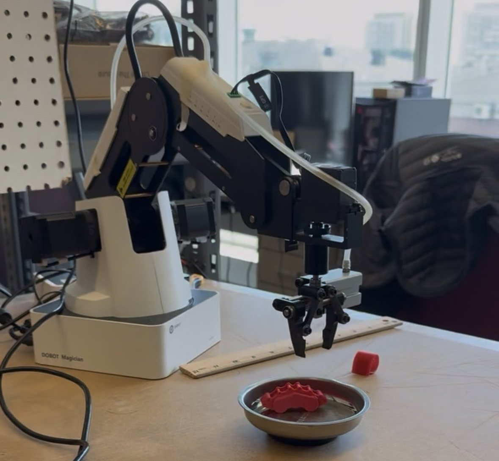

Project · IDEAS Clinic × Toyota · Delivered
Toyota Challenge — Collaborative Robotics
A collaborative-robotics workshop designed with Toyota: a vision-guided pick-and-place cell that stops the moment a human hand enters the workspace.

Goal
Design a workshop that teaches human–robot collaboration hands-on, in partnership with Toyota — letting students see both the automation and the safety engineering that make collaborative cells work in industry. This was one of two sub-problems I built for the Toyota Innovation Challenge (Summer 2026); the other was autonomous fleets.
The design half matters, but testing was the real job. A workshop challenge is only good if you already know where it breaks — so we solved it ourselves first, several different ways, specifically to find the places students would get stuck.
The setup
- A Dobot Magician arm with a gripper, working a tabletop cell.
- An Orbbec camera on an adjustable stand watching the same workspace.
- A Python control library written by Dr. Mike that drives the arm — the layer that makes it practical to have students program a real industrial-style cell in a few days.
How it works
- An OpenCV pipeline segments the workspace by colour, identifies target objects, and computes pick coordinates. The baseline we hand students detects red objects, picks them up, and drops them into a round container.
- A Dobot robotic arm picks each matching object and places it into a tray, fully autonomously.
- A safety layer continuously watches the work zone: if a human hand is detected inside it, the arm pauses immediately and resumes only once the hand is clear of the zone — the same interlock philosophy used in industrial cobot cells.
Solving our own challenge
Once the baseline worked, the fun part started — building out our own solutions so we'd actually understand the problem space well enough to help students through it:
- Retargeting by colour — changing which colour the arm hunts for, which sounds trivial until lighting shifts and your "red" threshold quietly stops matching red.
- Multiple objects — deciding what to pick first and how to keep the vision pipeline stable while the scene changes under it.
- Multiple drop-off points — sorting rather than just clearing, so the arm has to route each object somewhere specific.
- Hand detection with YOLO — I added a YOLO model on top of the colour pipeline so the safety interlock keys on an actual detected hand rather than a colour blob. If a hand enters the working envelope during a task, the arm stops dead and stays stopped until the zone is clear.
- Irregular parts — moving from flat velcro markers to 3D-printed car parts like brake calipers, where the shape gives you no clean centroid to grab.
What didn't work
One idea I couldn't land: a helmet-mounted camera, so the arm would only move while the human was actually looking at it — gaze as the safety signal instead of proximity. Combining that with the hand detection turned into a mess of conflicting triggers, and I ran out of time to untangle it. It's still the version of this I'd most like to get working.
Status
Delivered as part of the Toyota Innovation Challenge at the IDEAS Clinic.
Challenge repo →
See also: the autonomous-fleets challenge and
my current IDEAS Clinic term.